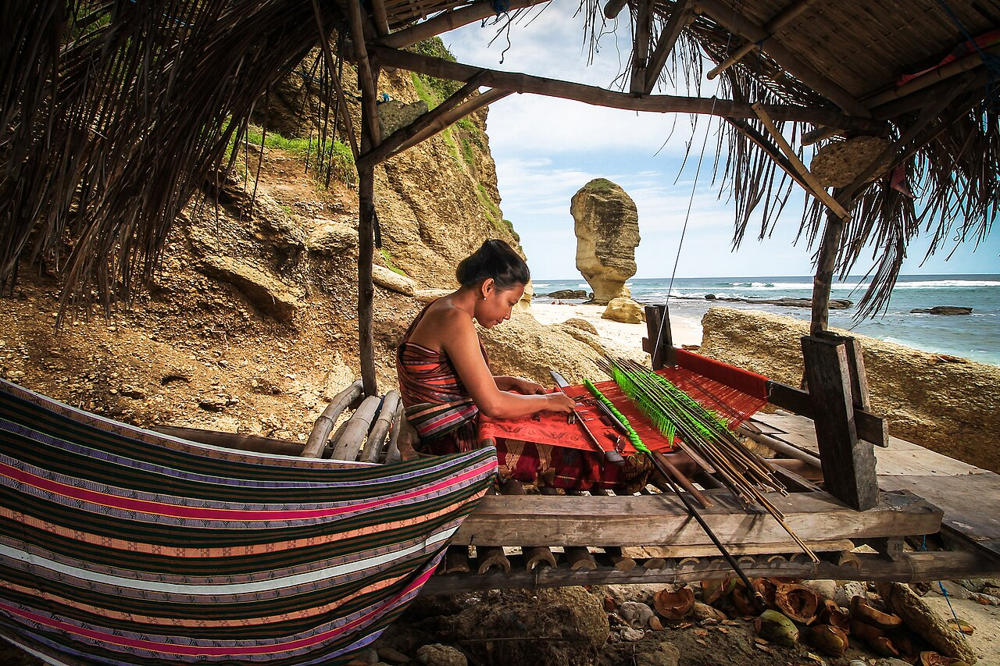

Setiap kain ditayangkan setelah informasi dan foto asli diperiksa oleh admin koperasi.
TENUN, TRADISI & KESEHARIAN
Warisan yang
Warisan yang
bisa Anda
kenakan.
Tenun Sambas yang menghubungkan tangan, tradisi, dan cerita. Temukan helai pilihan Anda, dan ikut merawat karya perempuan penenun.
DIRAWAT DENGAN HATI · DITENUN DENGAN MAKNA
Tradisi yang terus hidup.
Proses menenun di Dusun Semberang, Sambas · Foto ilustrasi
DARI TANGAN, SAMPAI KE HATI
Lihat semua koleksi
Helai pilihan, cerita istimewa.
LEBIH DARI SEHELAI KAIN
Ditenun perlahan.
Ditenun perlahan.
Dirawat bersama.
Di balik setiap motif, ada ketelitian dan pengetahuan yang diwariskan. Rantai Mawar menjadi ruang untuk merawat tradisi itu, sekaligus membuka kesempatan baru bagi perempuan penenun.
Kenali rumah dan cerita kamiTradisi yang hidupKomunitas yang bertumbuh
Artikel Terbaru
Lihat semua artikel →Memuat artikel…